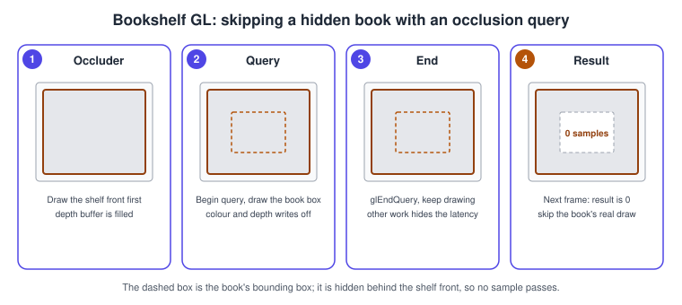
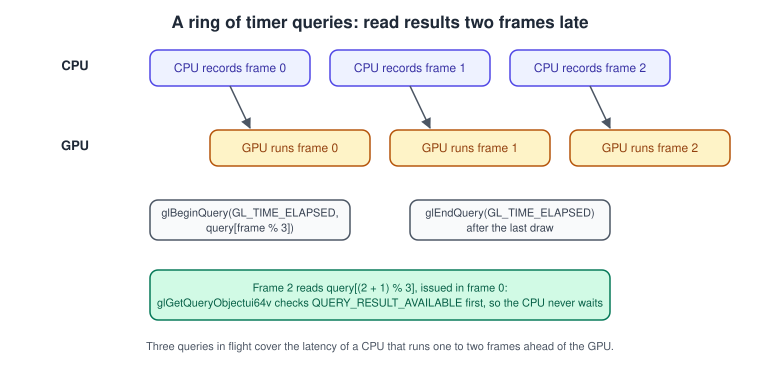
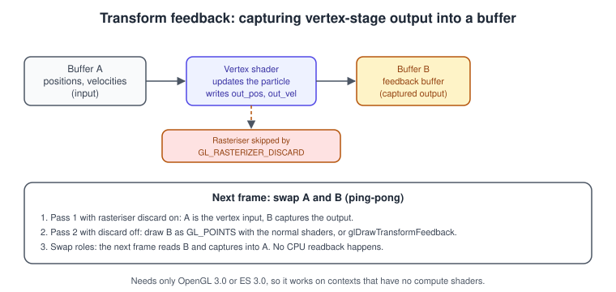

Synchronisation, Queries and Transform Feedback
|
This content was generated with the assistance of AI and should be verified against the official documentation before being relied on in production. |
OpenGL commands are not executed when you call them. The driver queues them and the GPU runs them later, often one or two frames behind the CPU. That asynchrony is what keeps both processors busy, but it raises three practical questions: how do you know when the GPU has finished with a buffer you want to overwrite, how do you measure what the GPU did, and how do you get data produced by the GPU back into later GPU work without a slow round trip through the CPU? The answers are sync objects, query objects and transform feedback.
The facts on this page were checked in November 2026. They apply to OpenGL 4.6 with GLSL 4.60 and OpenGL ES 3.2 with GLSL ES 3.20; the version in which each feature became core is given with it. Sync objects and transform feedback are core in OpenGL 3.2 and 3.0 and in ES 3.0, so they run on every platform of this guide, including macOS (which stops at OpenGL 4.1) and Android. Timer queries are core on desktop since OpenGL 3.3 but are an extension on ES. The surrounding concepts are in The OpenGL Rendering Pipeline and in Performance and Profiling.
The CPU and GPU timelines
The CPU records commands and returns immediately. The GPU consumes them as it can. glFlush makes sure the queued commands
are on their way; glFinish blocks until all of them have completed. glFinish is a blunt tool: it stalls the CPU until
the GPU is idle, then leaves the GPU idle while the CPU prepares the next frame. Use it for debugging and benchmarking
only, never in the frame loop. The finer instruments below let the CPU wait for one specific point in the command stream
without draining everything.
The sequence shows the fence pattern used for streaming: each slice of a buffer has a fence, and the CPU waits on the fence only when it wants to reuse the slice.
Sync objects and fences
A sync object is a marker inserted in the command stream. It starts unsignalled and becomes signalled when the GPU has completed everything issued before it. Sync objects are core in OpenGL 3.2 and ES 3.0.
| Function | Purpose |
|---|---|
|
Creates the fence and returns a |
|
Blocks the CPU for at most |
|
Makes the GPU wait for the fence without blocking the CPU. It is used to order work between two contexts; on a single context commands are already ordered. |
|
Polls without waiting; the result is |
|
Frees the object once you no longer need it. |
Source: OpenGL 4 reference: glFenceSync
Streaming a buffer with persistent mapping and fences
OpenGL 4.4 added immutable buffer storage with a persistent mapping: you map once with GL_MAP_PERSISTENT_BIT and the
pointer stays valid while the GPU uses the buffer. Writing to a region the GPU is still reading is a data race, so you
divide the buffer into as many slices as frames in flight (three is typical) and protect each slice with a fence. This is
the approach for per-frame data such as the Bookshelf’s instance matrices; the buffer functions themselves are explained in
Buffer Objects and Vertex Specification.
#include <glad/gl.h>
#include <cstddef>
#include <cstring>
class StreamingBuffer {
public:
static constexpr int kFrames = 3;
explicit StreamingBuffer(std::size_t sliceBytes) : slice_(sliceBytes) {
const GLbitfield flags = GL_MAP_WRITE_BIT | GL_MAP_PERSISTENT_BIT | GL_MAP_COHERENT_BIT;
glCreateBuffers(1, &buffer_); // OpenGL 4.5 DSA
glNamedBufferStorage(buffer_, GLsizeiptr(slice_ * kFrames), nullptr, flags);
mapped_ = static_cast<unsigned char*>(
glMapNamedBufferRange(buffer_, 0, GLsizeiptr(slice_ * kFrames), flags));
}
~StreamingBuffer() {
for (GLsync& f : fences_) if (f) glDeleteSync(f);
glUnmapNamedBuffer(buffer_);
glDeleteBuffers(1, &buffer_);
}
// Returns the byte offset of the slice the CPU may now write; call once per frame.
std::size_t acquire(const void* data, std::size_t bytes) {
waitFor(fences_[frame_]); // the GPU is done with this slice
const std::size_t offset = slice_ * frame_;
std::memcpy(mapped_ + offset, data, bytes);
return offset;
}
// Call after the draw calls that read the slice have been issued.
void release() {
fences_[frame_] = glFenceSync(GL_SYNC_GPU_COMMANDS_COMPLETE, 0);
frame_ = (frame_ + 1) % kFrames;
}
GLuint buffer() const { return buffer_; }
private:
static void waitFor(GLsync& fence) {
if (!fence) return;
GLbitfield flags = GL_SYNC_FLUSH_COMMANDS_BIT; // only the first wait flushes
for (;;) {
const GLenum r = glClientWaitSync(fence, flags, 1'000'000); // 1 ms per attempt
if (r == GL_ALREADY_SIGNALED || r == GL_CONDITION_SATISFIED || r == GL_WAIT_FAILED) break;
flags = 0;
}
glDeleteSync(fence);
fence = nullptr;
}
GLuint buffer_ = 0;
unsigned char* mapped_ = nullptr;
std::size_t slice_;
int frame_ = 0;
GLsync fences_[kFrames] = {};
};Usage per frame: offset = stream.acquire(matrices, bytes); then bind the buffer range starting at offset for the draws
(glBindBufferRange, or a base offset in the vertex layout), then stream.release();. With GL_MAP_COHERENT_BIT the writes
are visible to the GPU without an explicit flush; without it, map with GL_MAP_FLUSH_EXPLICIT_BIT and call glFlushMappedBufferRange, or issue
glMemoryBarrier(GL_CLIENT_MAPPED_BUFFER_BARRIER_BIT). On contexts older than 4.4 (including macOS) use
glMapBufferRange with GL_MAP_INVALIDATE_RANGE_BIT and GL_MAP_UNSYNCHRONIZED_BIT, with the same fences protecting
each region, or allocate a new buffer storage with glBufferData(target, size, nullptr, usage) (orphaning).
Common mistakes with fences:
-
Creating a fence and never deleting it leaks a driver object per frame.
-
Waiting with a timeout of zero in a loop without flushing can spin forever; set
GL_SYNC_FLUSH_COMMANDS_BITon the first wait. -
Using the fence from a different context without sharing: sync objects are shared between contexts of the same share group.
-
Treating
glFinishas the cheap way to be safe. It is the slowest option.
Query objects
A query object asks the GPU a question about the commands issued between glBeginQuery and glEndQuery (or about a single
point, for timestamps) and stores the answer. The answer arrives later, so the right way to use queries is to read the result
a frame or two after issuing it. Query results come from glGetQueryObjectuiv / glGetQueryObjectui64v with
GL_QUERY_RESULT_AVAILABLE (poll, never blocks) and GL_QUERY_RESULT (blocks until ready). OpenGL 4.5 can also write the
result into a buffer object without a CPU round trip (glGetQueryBufferObjectui64v).
| Target | Core since | Result |
|---|---|---|
|
OpenGL 1.5 (desktop only) |
Number of samples that passed the depth and stencil tests. |
|
OpenGL 3.3, ES 3.0 |
A boolean: did any sample pass? Cheaper than counting. |
|
OpenGL 4.3, ES 3.0 |
Like the previous one but may report true for hidden geometry; usually the cheapest. |
|
OpenGL 3.0, ES 3.0 |
Primitives produced by the vertex-processing stages. |
|
OpenGL 3.0, ES 3.0 |
Primitives actually written to transform feedback buffers. |
|
OpenGL 3.3 (desktop) |
GPU time in nanoseconds between begin and end. |
|
OpenGL 3.3 (desktop) |
GPU clock value at a point of the command stream. |
Source: OpenGL 4 reference: glBeginQuery
OpenGL ES 3.0 to 3.2 define the occlusion and transform-feedback queries but no timer queries in the core specification; on
mobile, GPU timing comes from the extension GL_EXT_disjoint_timer_query where the driver offers it, or from the vendor
profilers described in Debugging and Tools.
Occlusion queries: skipping hidden books
An occlusion query counts how much of a cheap proxy (the bounding box of an expensive object) would be visible. If nothing would be, the real object can be skipped. The result is available only after the GPU has run the proxy, so the usual pattern is to issue the query this frame and use the answer next frame.

struct Occludee {
GLuint query = 0;
bool visible = true; // optimistic until a result says otherwise
bool pending = false;
};
void setup(Occludee& o) { glGenQueries(1, &o.query); }
void drawBook(Occludee& o) {
// 1. collect the previous result, if the GPU has produced it
if (o.pending) {
GLuint available = 0;
glGetQueryObjectuiv(o.query, GL_QUERY_RESULT_AVAILABLE, &available);
if (available) {
GLuint anySamples = 0;
glGetQueryObjectuiv(o.query, GL_QUERY_RESULT, &anySamples);
o.visible = anySamples != 0;
o.pending = false;
}
}
// 2. draw the real book only when it was visible last time
if (o.visible) drawBookMesh();
// 3. test the bounding box now, with no side effects on the framebuffer
if (!o.pending) {
glColorMask(GL_FALSE, GL_FALSE, GL_FALSE, GL_FALSE);
glDepthMask(GL_FALSE);
glBeginQuery(GL_ANY_SAMPLES_PASSED_CONSERVATIVE, o.query);
drawBoundingBox();
glEndQuery(GL_ANY_SAMPLES_PASSED_CONSERVATIVE);
glDepthMask(GL_TRUE);
glColorMask(GL_TRUE, GL_TRUE, GL_TRUE, GL_TRUE);
o.pending = true;
}
}The occluders must be drawn before the test, and the box must be drawn with the depth test on so hidden samples fail it.
Because the result is one frame old, a book that has just come into view can be missing for one frame; accept that or draw
objects optimistically for a frame after they move. Desktop OpenGL (3.0) also offers conditional rendering,
glBeginConditionalRender(query, GL_QUERY_NO_WAIT) to glEndConditionalRender(), which makes the GPU itself skip the
enclosed draw calls when the query result is zero, with no CPU involvement. It is not part of OpenGL ES.
Timer queries: measuring the GPU
GL_TIME_ELAPSED measures the GPU time between glBeginQuery and glEndQuery. Because the result is delayed, keep a small
ring of query objects and read the oldest one. The class below measures a frame section (for example the dust compute pass
from Compute Shaders) without ever stalling.

class GpuTimer {
public:
GpuTimer() { glGenQueries(kRing, queries_); }
~GpuTimer() { glDeleteQueries(kRing, queries_); }
// Call first in the frame: returns true and the elapsed milliseconds when the oldest result is ready.
bool poll(double& milliseconds) {
if (!pending_[next_]) return false;
GLuint available = 0;
glGetQueryObjectuiv(queries_[next_], GL_QUERY_RESULT_AVAILABLE, &available);
if (!available) return false;
GLuint64 nanoseconds = 0;
glGetQueryObjectui64v(queries_[next_], GL_QUERY_RESULT, &nanoseconds);
pending_[next_] = false;
milliseconds = double(nanoseconds) * 1e-6;
return true;
}
void begin() { glBeginQuery(GL_TIME_ELAPSED, queries_[next_]); }
void end() {
glEndQuery(GL_TIME_ELAPSED);
pending_[next_] = true;
next_ = (next_ + 1) % kRing;
}
private:
static constexpr int kRing = 3;
GLuint queries_[kRing] = {};
bool pending_[kRing] = {};
int next_ = 0;
};Use: if (timer.poll(ms)) smoothed = 0.9 * smoothed + 0.1 * ms; timer.begin(); renderScene(); timer.end();. Only one
GL_TIME_ELAPSED query can be active at a time, so nested sections need glQueryCounter timestamps instead
(glQueryCounter(id, GL_TIMESTAMP) once at each point, then subtract). A timer query measures GPU time, not frame time; the
display refresh and the swap interval are outside it. Do not read GL_QUERY_RESULT with the glGetQueryObject family straight after
glEndQuery: that blocks the CPU until the GPU catches up and turns the measurement into the stall you wanted to find.
Transform feedback
Transform feedback captures the output of the last vertex-processing stage (the vertex shader, or the tessellation evaluation or geometry shader if present) into buffer objects, before rasterisation. You can then draw the captured data again, or use it as input for the next pass. It is core in OpenGL 3.0 and ES 3.0, so it is the portable way to run simulations on the GPU where compute shaders (4.3, ES 3.1) are not available, for example on macOS.

How it is set up:
-
Before linking the program, list the vertex-shader outputs to capture with
glTransformFeedbackVaryings(program, count, names, bufferMode).GL_INTERLEAVED_ATTRIBSwrites them together into one buffer;GL_SEPARATE_ATTRIBSwrites each into its own buffer binding. Link afterwards: the varyings are taken at link time. -
Bind a buffer to
GL_TRANSFORM_FEEDBACK_BUFFERwithglBindBufferBase(orglBindBufferRange) at the matching index. -
Between
glBeginTransformFeedback(primitiveMode)andglEndTransformFeedback(), draw. TheprimitiveModeis the basic type of primitive the draw produces:GL_POINTS,GL_LINESorGL_TRIANGLES. -
Normally call
glEnable(GL_RASTERIZER_DISCARD)first so the data is captured but nothing is rasterised.
Since OpenGL 4.4 (GL_ARB_enhanced_layouts) the capture layout can be declared in the shader with
layout(xfb_buffer = 0, xfb_offset = 0) on the outputs instead of calling glTransformFeedbackVaryings. Since OpenGL 4.0
and in ES 3.0 a transform feedback object (glGenTransformFeedbacks, glBindTransformFeedback) stores the buffer
bindings, and glDrawTransformFeedback draws the captured primitives without the CPU knowing how many there are.
A complete example: falling books on the GPU
The program below simulates 1024 falling books (the first step of the "catch the falling book" game): the vertex shader integrates gravity and writes the new state through transform feedback into the second of two buffers; a second pass draws the result; then the roles swap. It needs only an OpenGL 3.3 core context.
// books_tf.cpp - GLFW + glad2 (gl:core=3.3). Transform feedback ping-pong, no compute shader.
#include <glad/gl.h>
#include <GLFW/glfw3.h>
#include <cstdio>
#include <cstdlib>
#include <random>
#include <utility>
#include <vector>
static const char* kUpdateVs = R"GLSL(
#version 330 core
layout(location = 0) in vec2 inPos;
layout(location = 1) in vec2 inVel;
uniform float uDt;
out vec2 outPos; // captured by transform feedback
out vec2 outVel;
void main() {
vec2 v = inVel + vec2(0.0, -0.8) * uDt; // gravity
vec2 p = inPos + v * uDt;
if (p.y < -1.0) { p.y = 1.0; v = vec2(0.0); } // the book fell off the screen: respawn at the top
outPos = p;
outVel = v;
gl_Position = vec4(p, 0.0, 1.0); // still required, but discarded by the rasteriser
}
)GLSL";
static const char* kUpdateFs = R"GLSL(
#version 330 core
out vec4 fragColor;
void main() { fragColor = vec4(0.0); }
)GLSL";
static const char* kDrawVs = R"GLSL(
#version 330 core
layout(location = 0) in vec2 inPos;
void main() { gl_Position = vec4(inPos, 0.0, 1.0); gl_PointSize = 6.0; }
)GLSL";
static const char* kDrawFs = R"GLSL(
#version 330 core
out vec4 fragColor;
void main() { fragColor = vec4(0.85, 0.35, 0.25, 1.0); }
)GLSL";
static GLuint compile(GLenum type, const char* src) {
GLuint s = glCreateShader(type);
glShaderSource(s, 1, &src, nullptr);
glCompileShader(s);
GLint ok = 0;
glGetShaderiv(s, GL_COMPILE_STATUS, &ok);
if (!ok) { char log[2048]; glGetShaderInfoLog(s, sizeof log, nullptr, log); std::fprintf(stderr, "%s\n", log); std::exit(1); }
return s;
}
static GLuint link(GLuint vs, GLuint fs, const char* const* captured = nullptr, GLsizei capturedCount = 0) {
GLuint p = glCreateProgram();
glAttachShader(p, vs);
glAttachShader(p, fs);
if (captured) glTransformFeedbackVaryings(p, capturedCount, captured, GL_INTERLEAVED_ATTRIBS); // before linking
glLinkProgram(p);
GLint ok = 0;
glGetProgramiv(p, GL_LINK_STATUS, &ok);
if (!ok) { char log[2048]; glGetProgramInfoLog(p, sizeof log, nullptr, log); std::fprintf(stderr, "%s\n", log); std::exit(1); }
return p;
}
int main() {
if (!glfwInit()) return 1;
glfwWindowHint(GLFW_CONTEXT_VERSION_MAJOR, 3);
glfwWindowHint(GLFW_CONTEXT_VERSION_MINOR, 3);
glfwWindowHint(GLFW_OPENGL_PROFILE, GLFW_OPENGL_CORE_PROFILE);
glfwWindowHint(GLFW_OPENGL_FORWARD_COMPAT, GL_TRUE); // required on macOS
GLFWwindow* window = glfwCreateWindow(800, 600, "Bookshelf GL - transform feedback", nullptr, nullptr);
if (!window) { glfwTerminate(); return 1; }
glfwMakeContextCurrent(window);
glfwSwapInterval(1);
if (!gladLoadGL(glfwGetProcAddress)) return 1;
const char* varyings[] = {"outPos", "outVel"};
GLuint update = link(compile(GL_VERTEX_SHADER, kUpdateVs), compile(GL_FRAGMENT_SHADER, kUpdateFs), varyings, 2);
GLuint draw = link(compile(GL_VERTEX_SHADER, kDrawVs), compile(GL_FRAGMENT_SHADER, kDrawFs));
GLint dtLocation = glGetUniformLocation(update, "uDt");
constexpr GLsizei kBooks = 1024;
std::mt19937 rng(249);
std::uniform_real_distribution<float> uni(-1.0f, 1.0f);
std::vector<float> initial; // x, y, vx, vy per book
for (GLsizei i = 0; i < kBooks; ++i) initial.insert(initial.end(), {uni(rng), uni(rng), 0.0f, 0.0f});
GLuint buffers[2], vaos[2];
glGenBuffers(2, buffers);
glGenVertexArrays(2, vaos);
for (int i = 0; i < 2; ++i) {
glBindVertexArray(vaos[i]);
glBindBuffer(GL_ARRAY_BUFFER, buffers[i]);
glBufferData(GL_ARRAY_BUFFER, GLsizeiptr(initial.size() * sizeof(float)),
i == 0 ? initial.data() : nullptr, GL_DYNAMIC_COPY);
glEnableVertexAttribArray(0);
glVertexAttribPointer(0, 2, GL_FLOAT, GL_FALSE, 16, reinterpret_cast<void*>(0)); // inPos
glEnableVertexAttribArray(1);
glVertexAttribPointer(1, 2, GL_FLOAT, GL_FALSE, 16, reinterpret_cast<void*>(8)); // inVel
}
glEnable(GL_PROGRAM_POINT_SIZE);
int src = 0, dst = 1;
double last = glfwGetTime();
while (!glfwWindowShouldClose(window)) {
double now = glfwGetTime();
float dt = float(now - last);
last = now;
// Pass 1: simulate. Read buffer src, capture into buffer dst, draw nothing.
glUseProgram(update);
glUniform1f(dtLocation, dt);
glBindVertexArray(vaos[src]);
glBindBufferBase(GL_TRANSFORM_FEEDBACK_BUFFER, 0, buffers[dst]);
glEnable(GL_RASTERIZER_DISCARD);
glBeginTransformFeedback(GL_POINTS);
glDrawArrays(GL_POINTS, 0, kBooks);
glEndTransformFeedback();
glDisable(GL_RASTERIZER_DISCARD);
// Pass 2: draw the freshly written buffer.
int w, h;
glfwGetFramebufferSize(window, &w, &h);
glViewport(0, 0, w, h);
glClearColor(0.08f, 0.08f, 0.10f, 1.0f);
glClear(GL_COLOR_BUFFER_BIT);
glUseProgram(draw);
glBindVertexArray(vaos[dst]);
glDrawArrays(GL_POINTS, 0, kBooks);
std::swap(src, dst);
glfwSwapBuffers(window);
glfwPollEvents();
}
glfwTerminate();
return 0;
}Points to remember:
-
A buffer cannot be both the transform feedback target and a vertex input in the same draw. That is why the pass reads
vaos[src]and writesbuffers[dst], and why the two buffers swap each frame. -
The interleaved layout of the captured data is
outPosthenoutVel, 16 bytes per vertex, which matches the stride of the vertex arrays. If you change the order invaryings, change the offsets too. -
The vertex shader still writes
gl_Position, even though the rasteriser is disabled. -
GL_TRANSFORM_FEEDBACK_PRIMITIVES_WRITTENreports how many primitives were captured, which matters when a geometry shader changes the count.
Compute shader or transform feedback
| Aspect | Transform feedback | Compute shader |
|---|---|---|
Available in |
OpenGL 3.0, ES 3.0, macOS |
OpenGL 4.3, ES 3.1, not macOS |
Output |
Appends vertices in order |
Any element, any buffer, any image |
Shared memory and barriers |
No |
Yes |
Scatter writes |
No: one output per input vertex |
Yes |
Shaders needed |
Vertex shader plus a trivial fragment shader on ES |
One compute shader |
For new code on a 4.3 or ES 3.1 context, compute is the more flexible tool. Transform feedback remains the portable fallback.
Common mistakes and performance notes
-
Stalling on query results. Reading
GL_QUERY_RESULTright afterglEndQuerywaits for the GPU. PollGL_QUERY_RESULT_AVAILABLE, or read a frame or two later. -
glFinishin the frame loop. It removes the CPU/GPU overlap. -
Reading back with
glGetBufferSubDataorglReadPixelsmid-frame. Both force a sync. Read a frame later behind a fence, or use a pixel pack buffer and fence it. -
Forgetting
glEnable(GL_RASTERIZER_DISCARD)/glDisable. Leaving it on gives a blank screen. -
Capturing varyings by the wrong names. Names passed to
glTransformFeedbackVaryingsmust match theoutvariables exactly, and are only used at link time; check the link log. -
Occlusion tests with the colour mask on. The box would be drawn into the frame.
-
Too few fences or queries in flight. A ring of two stalls on some drivers; three is the usual minimum.
What changed recently
-
Persistent and coherent buffer mapping (OpenGL 4.4, 2013) changed buffer streaming; older advice built around
glMapBufferandglBufferData(NULL)orphaning is no longer the best option on desktop. -
Query results can be written directly to buffer objects since OpenGL 4.5.
-
The OpenGL ES 3.0 Programming Guide uses transform feedback and queries; the OpenGL SuperBible 4th edition describes occlusion queries but predates sync objects (3.2), timer queries (3.3) and transform feedback (3.0), so it has no equivalent of the fence pattern above.
-
Vulkan and Metal replace these with explicit fences, semaphores and timestamp queries, described in Explicit vs Implicit APIs; the OpenGL model is the implicit one, where the driver tracks dependencies for you except across the places on this page.